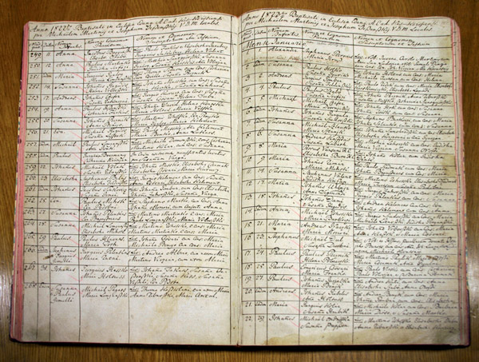

Sok ezer szenvedélyes kutató tapasztalata bizonyítja: veszélyes dolog családtörténeti kutatásba kezdeni. Veszélyes, mert, aki egyszer belekezdett, többé nem tudja abbahagyni. Mert mindig akad egy újabb nyom, mely rég elporladt emberek boldog vagy tragikus életének megismerésére ösztökéli a kései utódot. És mindig akad egy bosszantó hiány a családfán: egy ős, akiről azon kívül, hogy léteznie kellett valaha, semmit sem sikerül kideríteni, bármennyit fáradozunk is.
Pedig a kutatás kezdetén minden olyan egyszerűnek tűnik. Hiszen saját személyi adatainkat álmunkból fölébresztve is fújjuk. Többnyire szüleink és nagyszüleink leszármazásával is tisztában vagyunk, és a családi legendákból vagy az öreg rokonok által megőrzött iratokból a dédszülők generációjáról is tudunk egyet-mást. Ezért lelkesen, és természetesen gyors eredményben bizakodva vágunk neki a levéltári kutatásnak. Úgy gondoljuk, hogy mi sem lehet egyszerűbb annál, mint az anyakönyvekből megállapítani, ki kinek a gyermeke, szülője vagy testvére, honnan származik dédanyánk, és mikor született dédapánk. Az interneten böngészve hamar ráakadunk olyan oldalakra, melyek elvezetnek minket abba a levéltárba, ahol megtalálhatjuk a kutatásainkhoz elengedhetetlenül szükséges állami anyakönyveket.
Ha biztosan tudjuk, hogy ősünk hol született, hol halt meg vagy hol kötött házasságot, valóban egyszerűen továbbléphetünk. De máris szembesülünk az első nehézséggel, ha például a fővárosban született ősünkről nem tudjuk, hogy melyik kerületben anyakönyvezhették. Ha az 1895 előtt keletkezett egyházi anyakönyvekben akarjuk folytatni a kutatást, akkor már azt is tudnunk kell, hogy a keresett ős melyik felekezethez tartozott. Tovább nehezíti a dolgunkat, hogy az anyakönyveket – „ahány ház, annyi szokás" – ritkán vezették egységes elvek szerint. És hozzá még: minél régebbi az anyakönyv, annál valószínűbb, hogy latinul, németül vagy valamilyen nemzetiségi nyelven íródott, és a benne szereplő személyek körülményeire vonatkozó adatokat még kibetűzni sem egyszerű, nemhogy megérteni.

Az anyakönyv egy plébánia, egyházközség vagy település írásos nyilvántartása, amelyet a születésekről, házasságkötésekről, illetve halálesetekről vezetnek. Kezdetben az adott katolikus egyház plébánosa vezette, majd a szekularizáció után bevezetésre került a világi, állami anyakönyvezés, de emellett az egyes vallási felekezetek tagjainak anyakönyvezése is folytatódott.
Aki a múltját, gyökereit nem ismeri, nem biztos, hogy megtalálja helyét a jövőben.
(régi szittya bölcselet)